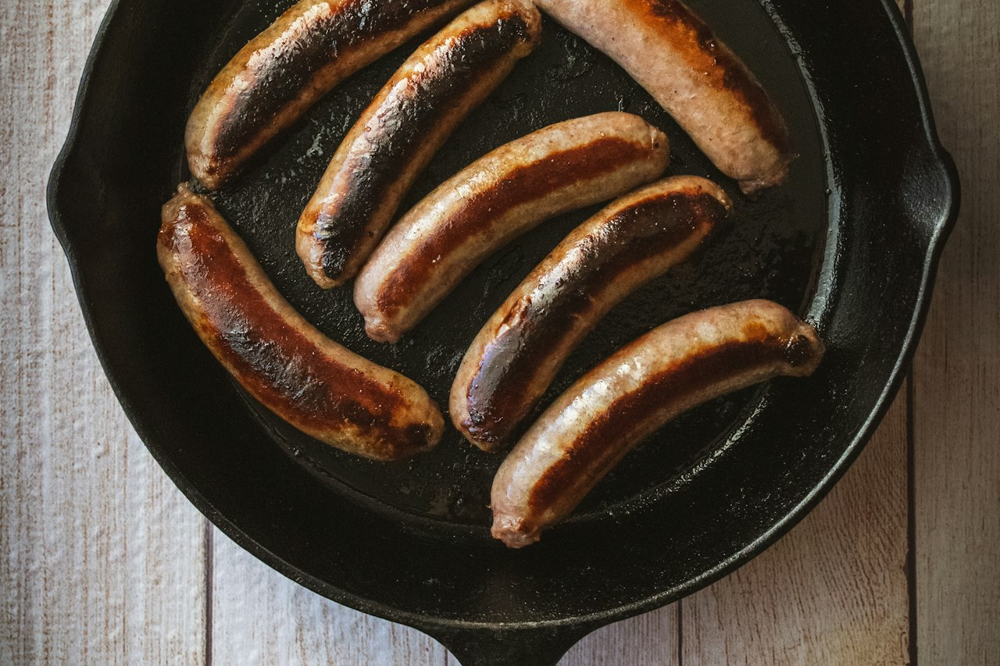

Turkey Breakfast Sausages
Homemade breakfast sausage patties using lean turkey and a breakfast-spice profile.
Breakfast · High Protein · Meal Prep

Per serving
163kcal
20gprotein
Makes 6 servings. Whole batch: 980 kcal, 120g protein.
Ingredients
Steps
- Mix turkey with seasonings gently.
- Rest mixture briefly if time allows.
- Form into small patties.
- Cook in skillet until browned and fully cooked through.
- Serve with eggs, tacos, or bagels.
Cook's notes
Easy meal prep protein that feels better than most store-bought turkey breakfast sausage.